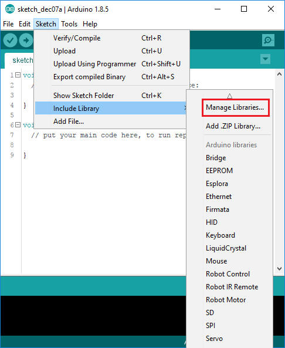

Programmering med Temperatursensoren
Av alle sensorene til air:bit er temperatursensoren den enkleste.
Temperatursensoren vi bruker i air:bit, DHT, er en veldig vanlig type sensor.
Heldigvis betyr dette for oss, at noen andre allerede har gjort jobben med å
finne ut hvordan man leser av data fra sensoren. Dette gjør det veldig mye
enklere å lese av temperatur data.
Vi kommer til å skrive en veldig enkel Arduino Sketch, der vi skriver ut
temperatur og fuktighetsmålinger over en seriell forbindelse.
Komme i gang
Igjen vil vi starte med en helt fersk tom Sketch. Du kan klikke påFile→New menyen for å starte en ny Sketch.
void setup() {
}
void loop() {
}
Installere SimpleDHT biblioteket
Før vi begynner må vi laste ned og installere et Arduino bibliotek. Tidligere
har vi brukt kommandoer som delay, pinMode og digitalWrite som alle er
del av standard-biblioteket for Arduino. Vi trenger nye kommandoer for å lese
av temperatur fra DHT-sensoren. Disse vil vi finne i et bibliotek som heterSimpleDHT.
Arduino IDE har en innebygd meny for å laste ned Arduino bibliotek. Klikk påSketch→Include library→Manage libraries... for å åpneLibrary Manager.

I Library Manager som åpner seg, må du nå søke for SimpleDHT som er
biblioteket for sensoren i air:bit. Skriv inn SimpleDHT i søkefeltet. Klikk
på resultatet som kommer opp, velg den nyeste versjonen i Drop-Down-menyen og
klikk på Install.

Globale definisjoner
Først må SimpleDHT-biblioteket inkluderes i Arduino-Sketchen. I C++ bruker
vi #include direktivet for dette:
#include <SimpleDHT.h>
Så ta en titt på Pinout Skjemaet. Definér en konstant for pinnen for
Temperatursensoren:
#define DHTPIN 9
Tidligere i eksempelet for telling, deklarte du en variabel med
datatype int. Nå må du deklarere en variabel for å kontrollere forbindelsen
med DHT sensoren. Datatypen for dette kommer fra det inkluderte SimpleDHT
biblioteket og heter SimpleDHT22.
SimpleDHT22 dhtSensor;
I koden over kalles variablen dhtSensor, men du kan bruke hvilket som helst
navn som du har lyst å bruke. Det anbefales å bruke et deskriptivt navn som
virker intuitivt å bruke. Merk også at vi bruker datatypen SimpleDHT22. Fra
beskrivelsen som vistes når du installerte DHT-biblioteket kan du se at det
finnes flere varianter av DHT-sensorer. air:bit sin sensor er av den nyereDHT22 varianten.
setup
For dette eksemplet for programmering med DHT sensoren skal vi bruke en
seriell forbindelse med PC'en, så vi må initialisere den serielle forbindelsen,
slik vi har gjort tidligere.
Serial.begin(9600);
loop
For hver gjennomgang gjennom loop-funksjonen skal vi lese ut måleverdiene fra
sensoren, så skrive dem ut over seriell-forbindelsen. Til slutt skal vi vente
en stund til vi tar neste måling.
For å starte med trenger vi to lokale variabler for å lagre måleverdiene (en
for temperatur og en for fuktighet). Lokale variabler deklareres akkurat som
globale variabler (som f.eks. dhtSensor), men de varer bare for én
gjennomgang gjennom loop-funksjonen, dvs. variablen lages på nytt for hver
gjennomgang. Variabler for å lagre en måling fra sensorer lages best som
lokale variabler i stedet for globale variabler.
Temperatur og Fuktighet er verdier som representeres som kommatall. F.eks. et
vanlig digitalt termometer vil vise temperatur som f.eks. 20.7°C. Fuktighet
måles som relativ fuktighet i %, f.eks. 41.2% RH. Variabler for å lagre
kommatall må bruke datatypen float. float er en forkortelse forfloating-point decimal number og det er slik en datamaskin vanligvis håndterer
kommatall.
float temperature = 0.0;
float humidity = 0.0;
I koden over ser du at variabler også kan initialiseres samtidig med
deklarasjonen. Merk at kommatall bruker . (punktum) som komma-tegn. Igjen,
merk at variablene kan navngis hvordan som helst.
Nå kan vi bruke read2 kommandoen som hører til dhtSensor variablen vår.read2 vil hente ut begge målingene i en kommando (derfor 2 i navnet).
Kommandoen forventer pinnen for dataen fra sensoren (som deklarert tidligere)
som første argument. Så tar kommandoen imot først plasseringen for
temperatur- og så for fuktighetsmålingen. Sist følger et til argument for å
motta tillegsdata fra sensoren, som vi ikke kommer til å bry oss om her.
Siden det kan være litt kryptisk å sende in plasseringer i kode, la oss set på
følgende kodelinje:
dhtSensor.read2(DHTPIN, &temperature, &humidity, NULL);
For å skrive en plassering brukes & symbolet for navnet til variablen verdien
skal plasseres i. NULL er en spesiell verdi, som i dette tilfellet fortellerread2 kommandoen å ignorere det siste argumentet.
Etter denne kommandoen vil den aktuelle verdien for temperatur og fuktighet være
lagret i variablene, så vi kan skrive dem ut.
Serial.print(temperature);
Serial.print("C");
Serial.print("\t");
Serial.print(humidity);
Serial.print("%");
Serial.println();
I den tredje linjen over ser du at \t skrives ut. I C++ brukes\ (backslash) for spesielle tegn. \t er et spesiellt tegn kalt tabulator.
Det brukes for å skille kolonner i en tabell fra hverandre. I et vanlig
tekst-programm, som f.eks. Word, vil du skrive et tabulator-symbol ved å trykke
Tab-tasten til venstre for Q på det norske tastaturet.
Helt til slutt vil vi vente en liten stund til det leses av en ny måling. Brukdelay-kommandoen for dette.
delay(1500);
Ferdig
Siden variabler kan navgis som du ønsker kan koden din se litt anderledes ut,
men hovedsakelig burde ting se u som vist under.
#include <SimpleDHT.h>
#define DHTPIN 9
SimpleDHT22 dht22;
void setup() {
Serial.begin(9600);
}
void loop() {
// Declare variables for sensor readings
float temperature = 0;
float humidity = 0;
// Take readings from sensor
dht22.read2(DHTPIN, &temperature, &humidity, NULL);
// Print out readings
Serial.print(temperature);
Serial.print("C");
Serial.print("\t");
Serial.print(humidity);
Serial.print("%");
Serial.println();
// Wait 2.5 seconds until next reading.
delay(2500);
}
Gå videre
↑ Gå til innholdsfortegnelsen
← Gå tilbake forrige neste steg: LED
→ Gå til neste steg: Støvsensoren